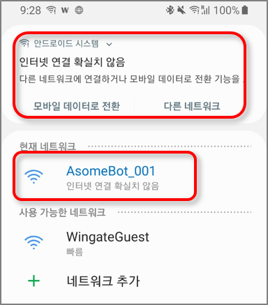
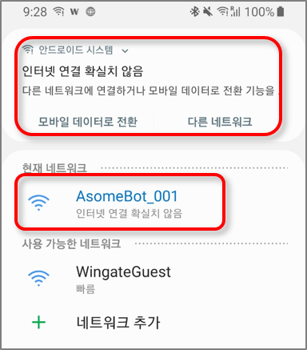
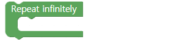
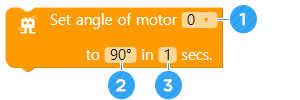

Buat gerakan tarian baru
• Belajarlah untuk mengembangkan gerakan tarian baru.
• Pelajari cara menyambungkan dan menjalankan gerakan baru ke AsomeBot Controller.
• Belajarlah untuk dapat menjelaskan dan menunjukkan gerakan yang baru dibuat.
A. Bagaimana Anda membuat gerakan tari?
Anda dapat membuat berbagai gerakan dengan menyesuaikan sudut dan waktu bergerak dari 4 motor yang terhubung ke AsomeBot .Anda dapat membuat gerakan mengibaskan kaki sebagai berikut:

B. Buat gerakan tarian baru
Anda dapat menggunakan 3 metode untuk membuat gerakan tarian baru.
1. Pertama, gabungkan gerakan yang ada menjadi satu gerakan. Gerakan ini dapat digabungkan menjadi satu gerakan
2. Kedua, tentukan satu sudut motor servo dan waktu gerakan pada suatu waktu. Anda harus menentukan motor servo yang akan dipindahkan.
3. Terakhir, tentukan beberapa sudut motor servo dan waktu gerakan pada suatu waktu. Tentukan sudut dan kecepatan gerak setiap motor pada suatu waktu. Membuat gerakan seperti yang di bawah ini akan membuat gerakan yang membutuhkan 2 detik untuk mengangkat dan menurunkan dua kaki.
C. Menyesuaikan waktu bergerak
Waktu gerak motor diatur ke 1 detik dan 0,1 detik akan menunjukkan gerakan yang sama sekali berbeda karena perbedaan kecepatan gerak bahkan jika gerakan yang sama dibuat seperti di bawah ini.
A. Ubah ke mode titik akses/access point (Grup [INTERNET])
Tetapkan nama AsomeBot untuk dikontrol oleh smartphone.

① Masukkan nama yang ingin Anda gunakan. Hanya bahasa Inggris dan angka yang dapat digunakan.

① Beri nama AsomeBot. Hanya bahasa Inggris dan angka yang dapat digunakan untuk memberi nama AsomeBot. Setelah Anda menetapkan nama, nama tersebut akan tetap dipertahankan meskipun daya dihidupkan dan dimatikan.
② Periksa nama yang Anda tentukan dan coba sambungkan. Pertama, cari nama AsomeBot yang Anda masukkan dari daftar WiFi dan sambungkan ke ponsel cerdas Anda. Jika sebuah pesan muncul mengatakan bahwa koneksi Internet tidak stabil, jangan tekan tombol apa pun dan tunggu pesannya menghilang.
 
B. Buka/open soket UDP (grup[INTERNET])
AsomeBot membuka port untuk berkomunikasi melalui Internet.

① Nomor port yang akan digunakan. Gunakan nomor sebagaimana adanya tanpa modifikasi.
C. Baca Pesan/read message (grup [INTERNET])
Baca pesan yang dikirim dari smartphone.

D. Ulangi hingga tak terbatas/repeat infinitely (grup [ADVANCE])
Jalankan blok di dalam blok untuk dijalankan secara berurutan. Di sini, Anda akan menunggu Aplikasi ponsel cerdas Anda untuk mengirim pesan, dan menjalankan perintah sesuai dengan pesan tersebut.
E. JIka/if (grup [ADVANCE])
Jalankan blok di dalam blok [If] ketika input detail kondisinya benar. Jika kondisinya salah, blok yang mengikuti blok if akan dieksekusi.

① Masukkan variabel yang akan digunakan dalam pernyataan bersyarat. Nilai default adalah ' i'.
② Pilih ketidaksetaraan default untuk membandingkan kondisi.
③ Masukkan nilai default untuk digunakan dalam kondisi ini.Anda perlu menambahkan blok untuk menentukan nilai bersyarat.
④ Tambahkan blok yang akan dieksekusi ketika kondisinya benar.
F. Nilai Karakter (grup [ADVANCE])
Nilai ini digunakan untuk mewakili karakter yang dimasukkan daripada variabel atau angka.

① Masukkan karakter yang akan digunakan sebagai syarat.
① Jika Anda membuat blok seperti di bawah ini, bicarakan bagaimana mereka bergerak:

G. Siaga/Attention (grup [BASIC])
AsomeBot dapat jatuh jika terhubung ke gerakan lain ketika kaki telah bergerak terlalu banyak. Menempatkan [Attention] di antara setiap gerakan akan membuat AsomeBot berdiri siaga untuk mencegah agar tidak jatuh.
Buat dan jalankan program untuk berdiri siaga/attention setelah gerakan balet.
H. Gerakan tari tanpa Opsi (grup[DANCE])

Lakukan gerakan balet dengan mengacungkan jari kaki AsomeBot.

AsomeBot bergoyang-goyang di tempat.

AsomeBot mengepakkan kakinya.

AsomeBot melakukan Warigari dengan kakinya.
AsomeBot mengangkat ujung jari kaki.Kebalikan dari gerak balet.

AsomeBot melakukan tarian moonwalk.
Balet adalah gerakan yang hanya berjinjit. Karena itu, kombinasikan dengan gerakan lain dan ciptakan gerakan yang lebih menyenangkan.
I. Gerakan tari dengan Opsi (grup [DANCE])
Pilih arah untuk menggerakkan arah kaki AsomeBot di opsi semua gerakan dansa.

Angkat satu kaki AsomeBot dan lakukan gerakan.

Angkat dan lipat kembali satu kaki AsomeBot.

Lipat satu kaki AsomeBot ke belakang dan goyangkan sekali.
① Mouse dibuat oleh siswa sekolah dasar Korea. Siswa menirukan adegan bersiul dengan kaki bergerak dalam animasi Mickey Mouse dan menamai proyeknya "Mouse".
② Dengan menggunakan gerakan Swing dan TickTock, buat program yang menggerakkan kaki pada satu waktu.
J. Atur sudut/set angle motor (grup [WALK])
Blok ini mengontrol 1 motor. Pilih satu motor dan tentukan sudut dan kecepatan pergerakan motor yang dipilih.
① Pilih nomor motor yang akan digerakkan.
② Masukkan sudut untuk menggerakkan motor yang dipilih.
③ Masukkan waktu yang dibutuhkan motor untuk bergerak.
Menggunakan nomor motor AsomeBot dalam gambar, buat program yang memungkinkan sudut kanan kaki (motor 3) AsomeBot bertahan pada 30 derajat selama 1 detik dan 90 derajat setelah 1 detik .

K. Atur sudut-sudut/set angles (grup [WALK])
Blok ini mengontrol sudut 4 motor pada saat yang bersamaan. Anda dapat menentukan sudut yang Anda inginkan dari 4 motor dan memutar dan mengatur waktu bergerak.
① Tentukan sudut 0, 1, 2 dan 3 motor secara berurutan dari kiri.
② Masukkan waktu yang dibutuhkan motor untuk bergerak.
Dengan menggunakan nomor motor AsomeBot pada gambar, buat program yang memungkinkan AsomeBot mengangkat dan menurunkan kaki kiri dan kanan secara bergantian.
Petunjuk. Sudut kaki kiri 150 derajat / Sudut kaki kanan 30 derajat

A. Aturan Permainan
① Buat program yang dapat mengontrol AsomeBot dengan Asome Controller.
② Buat 3 gerakan tarian baru pilihan Anda.
- Gerakan yang dibuat dengan menggabungkan gerakan yang ada
- Gerakan dibuat dengan menggerakkan motor satu per satu
- Gerak yang dibuat dengan menggerakkan beberapa motor sekaligus
③ Buat program untuk menjalankan gerakan baru dengan tombol angka Asome Controller.
B. Algoritma
Apakah Anda menciptakan gerakan tarian yang luar biasa? Pamerkan gerakan tari yang Anda buat dengan metode di bawah ini:
① Peragakan gerakan tari Anda dan biarkan penonton tahu nama gerakan tari tersebut.
② Juga jelaskan mengapa Anda menciptakan gerakan tarian.
③ Dengarkan kisah gerakan tari teman Anda.
④ Putar musik dan biarkan robot melakukan tarian yang mengagumkan untuk gerakan tarian yang Anda buat.

C. Bermain game